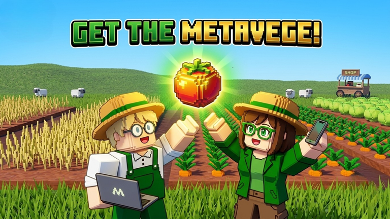
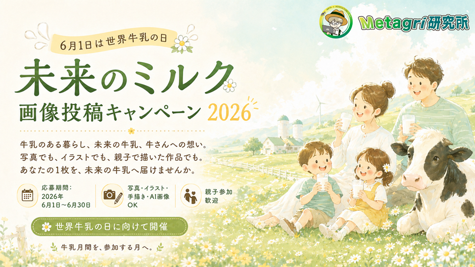
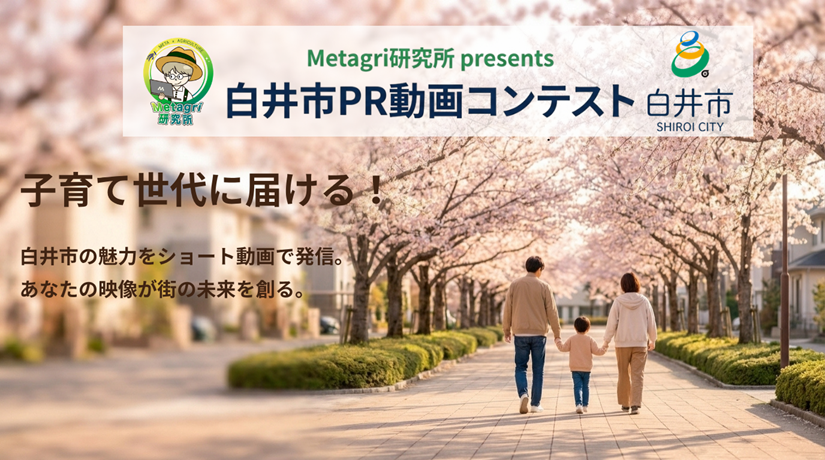
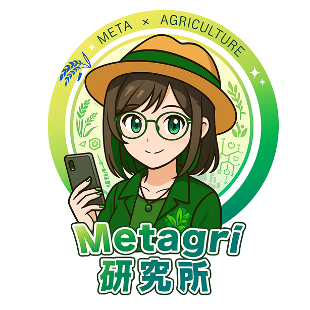
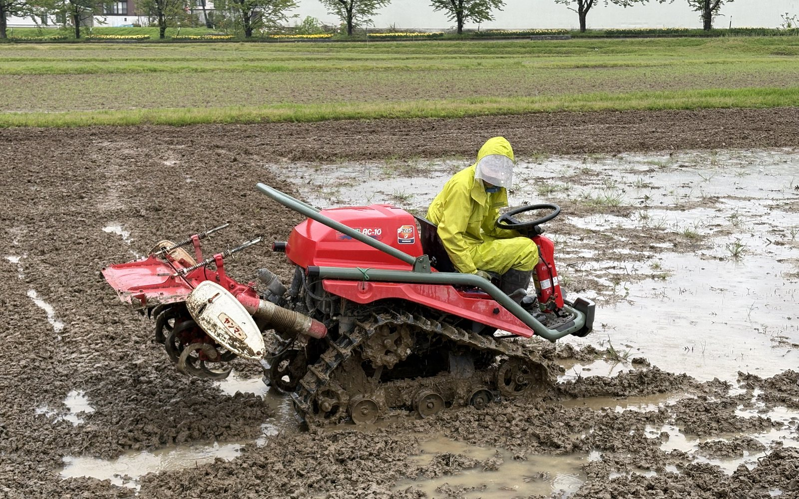

読書会に参加する
やること: 課題の本を読み、感想や疑問を話し合う。前半は黙々と読書、後半はディスカッションという形式です。
身につく力: 自分の考えを言葉にする力。

農業 × AI × コミュニティに興味がある学生へ
農業×AIのオンラインコミュニティで、読書会・勉強会・交流会に参加しながら運営をお手伝いする、体験型インターン。成果物のノルマや納期はなく、参加できるときに参加する形で大丈夫です。
学生対象／完全リモート／週2から3時間程度／報酬なし
迷っている段階でもOK。フォーム、Instagram DM、公式LINEから気軽にメッセージしてください。
Metagri研究所の現在地
Concept
本を読む、話を聞く、AIに聞く。ひとりでもできる時代だからこそ、感想を言い合い、疑問をぶつけ合える「場」の価値が高まっています。その場づくりを、参加しながら体験してみませんか。
What You Do
以下は活動の例です。関心のあるものを選んで関われます。すべてを担当する必要はありません。
やること: 課題の本を読み、感想や疑問を話し合う。前半は黙々と読書、後半はディスカッションという形式です。
身につく力: 自分の考えを言葉にする力。
やること: 農業・AI・地域づくりなどのテーマで、メンバーの発表や話題に触れ、意見を交わす。
身につく力: いろいろな立場の人から学ぶ力。
やること: イベントの告知文や、開催後のまとめメモの下書きを手伝う。
身につく力: 伝わる文章を書く力。
やること: タイムキープ、感想の記録、参加者への声かけなどを補助する。
身につく力: オンラインで人を巻き込む運営力。
やること: 小さな疑問や違和感を、探求のチャンネルに投稿して対話の種にする。
身につく力: 問いを立てる力。
やること: 週1回程度、今週やったことと気づきを1から2行で残す。
身につく力: 就活や次の挑戦で語れる経験を残す力。
希望者は、読書会や勉強会の企画・進行（読みたい本やテーマの提案など）にも挑戦できます。
Community
コミュニティの活動例をご紹介します。参加を通じて、気になるものに触れられます。

毎朝の農業×web3クイズ配信を支える仕組み。コミュニティの学びの習慣づくりに役立っています。

農業のリアルな課題を、ゲームとして触れられる入り口に変える取り組みです。

SNS投稿や称号NFT、牧場の特製カヌレを組み合わせた応援企画です。



農園体験、収穫、マルシェ販売、クラウドファンディング設計など、現場で得た気づきを事業の形にする企画が進んでいます。
What You Gain
Culture
成果や作業量を競う場ではありません。安心して参加し、学べる場であることを大切にしています。
参加は任意です。忙しい時期は休んで、戻りたいときに戻れます。
小さな疑問や違和感こそ、対話の種になります。
完璧を待たず、考え途中でも共有して大丈夫です。
詰まったら抱え込まず、Discordで気軽に聞いてください。
気づきを短い言葉で残し、自分の変化を振り返ります。
How It Works
リモートでも迷わないように、Discordを軸にシンプルに進めます。
読書会・勉強会・交流会のうち、参加できるものに参加します。
感想や疑問を共有し、他の人の見方に触れます。
告知文やまとめメモの下書き、当日の進行を、できる範囲で手伝います。
週1回程度、ひとこと日誌で気づきを残します。
続ける・休む・終えるを、いつでも相談して決められます。
参加前の不安は、むしろ自然です。
農業、AI、web3に詳しくなくても大丈夫。読書会や交流会に参加するところから始められます。
時間や場所の拘束はなく、参加できるときだけで構いません。試験期間や忙しい時期は休めます。
畑に出るだけでなく、発信、デザイン、AI、コミュニティから農業に関われます。
Fit
Requirements
大学生、大学院生、短大生、高専生、専門学生。学年・学部は不問、文系・理系も問いません。
2か月以上が目安です（最短1か月からの相談も可）。延長や途中終了もご相談ください。
週2から3時間程度（週1時間・月に数時間からの参加も可）。時間や場所の拘束はなく、イベントへの参加も任意です。学業・試験期間・就活期は休止できます。
完全リモート。Discordとオンライン会議で行い、全国どこからでも参加できます。
読書会・勉強会・交流会への参加と運営サポート、告知文・まとめメモの下書き補助、ひとこと日誌など。
Discord、Googleドキュメント／スプレッドシート、生成AI（無料版で可）。
報酬はありません（無報酬）。完全リモートのため交通費・宿泊費は発生せず、参加費も無料です。雇用契約・業務委託契約は結ばず、学びを目的とした体験型のインターンシップです。
若干名（3名程度）。応募締切は2027年3月31日です（定員になり次第終了）。
Next Step
参加学生の情報は、採用選考には使用しません。
FAQ
報酬はありません（無報酬の体験型インターンです）。完全リモートのため交通費・宿泊費は発生せず、参加費も無料です。雇用契約・業務委託契約は結びません。
参加できます。経験や知識は問いません。読書会や交流会に参加し、気になったことを共有するところから始められます。
週2から3時間程度が目安です。週1時間や月に数時間からの参加も相談できます。時間や場所の拘束はなく、イベントへの参加も任意です。
参加できます。活動は完全リモートです。Discordとオンライン会議で進めるので、全国どこからでも参加できます。
読書会・勉強会・交流会への参加と、告知文やまとめメモの下書き、当日の進行サポート、週1回程度のひとこと日誌などです。成果物のノルマや納期はありません。
両立できます。テスト期間や就活時期など、学業を優先したい時期は休止できます。
スキルや経験より、参加してみたい気持ちと、気づきを共有してみようという姿勢を大切にしています。
大丈夫です。フォームで「詳細を聞きたい」と送るか、Instagram DMまたは公式LINEから気軽にメッセージしてください。
Apply
応募するか迷っている段階でも構いません。興味を持った理由、参加してみたいことを教えてください。
フォームが開きにくい場合は、フォームを別タブで開くか、Instagram DM、公式LINEから「コミュニティ活動サポートについて聞きたい」と気軽にメッセージしてください。